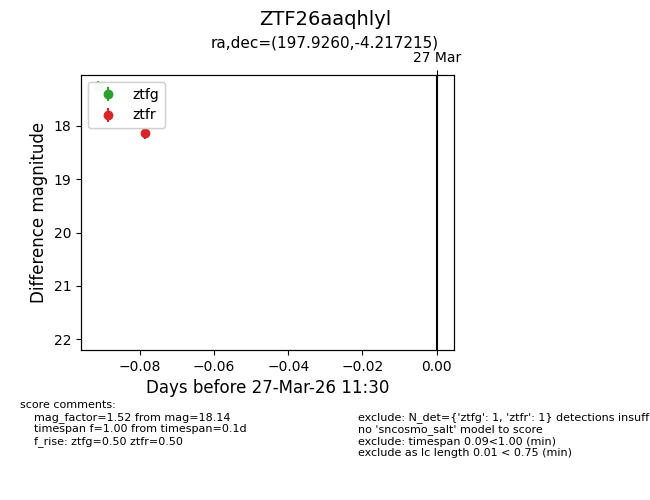
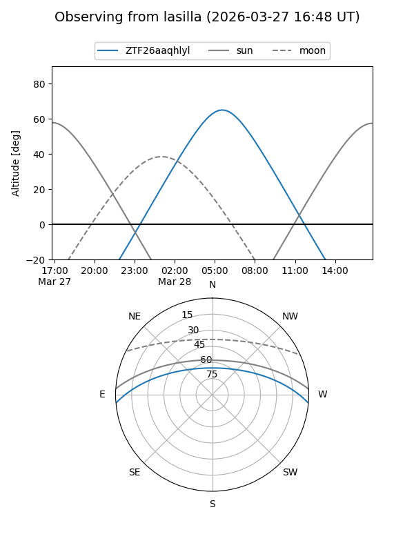
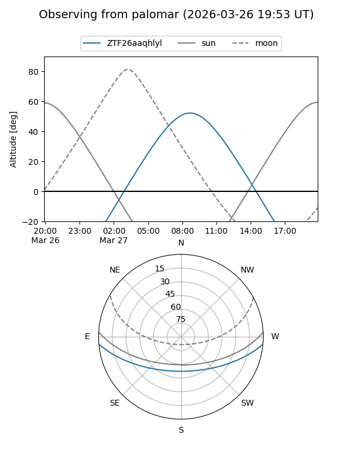

ZTF26aaqhlyl
Target ZTF26aaqhlyl at 2026-03-27 11:33
Aliases and brokers:
FINK: link
Lasair: link
ALeRCE: link
alt names
ZTF26aaqhlyl (ztf,fink_ztf)
Coordinates:
equatorial (ra, dec) = 197.9260,-4.21721
equatorial (HMS+DMS) = 13:11:42.23,-04:13:01.97
galactic (l, b) = (312.5736,+58.27464)
Flags:
Photometry:
last ztfg=17.25, ztfr=18.14
1 ztfg, 1 ztfr detections
Lightcurve

Visibility


Additional plots